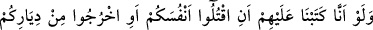
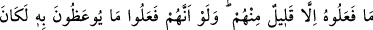
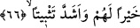

–“Sirkedeki böcek gibi yaşayacaklar.” buyurdu.
–“Peki dinlerini nasıl koruyacaklar, yâ Rasûlallah?” sorusuna da Peygamber
Efendimiz:
–“Avucunuzdaki kömür gibi. Eğer onu bırakırsanız söner; elinizde tutar yâhut
sıkarsanız elinizi yakar.” diye cevap verdi.[65]
Ebû Necîh İrbâz b. Sâriye (r.a.)’ın şöyle anlattığı rivâyet edilmiştir: “Rasûlullah
(s.a.v.) bize çok tesirli bir öğüt verdi. Bu öğütten dolayı kalpler ürperdi, gözler yaşardı.
Biz:
–“Yâ Rasûlallah bu, vedâ eden birinin öğüdüne benziyor. Bari bize tavsiyede
bulun.” dedik. Hz. Peygamber (s.a.v.) şöyle buyurdu:
– “Size Allah’tan korkmanızı ve başınıza Habeşli bir köle de getirilse dinleyip itâat
etmenizi tavsiye ederim. İçinizden ömrü olanlar bir çok anlaşmazlıklar görecekler. O
zaman benim sünnetime, râşid ve hidâyet rehberi olan halîfelerimin sünnetine sarılın.
Sünnetlere dört elle sarılın. Sonradan uydurulup dîne sokulan şeylerden uzak durun.
Çünkü her bid’at dalâlettir, sapıklıktır.”[66]
Şu halde mü’min, kıyâmet günü Hz. Peygamber (s.a.v)’in şefâatine nâil olmak,
cehennem azâbından kurtulmak ve iyilerle birlikte cennete girmek için onun sünnetine
tâbi olmalı, her bid’at ve dalâletten uzak durmalı, dışını şerîatle ve içini de tarîkatla
ıslah etmelidir. Âhirette cennetlerde bulunan mü’min, bahçede devamlı duran meyveli
ağaç gibidir. Cehennemin çukurlarındaki münâfık ise bahçeden sökülerek ateşe atılıp
yakılan meyvesiz ağaç gibidir.
Firdevsî şöyle diyor:
Meyvesi tatlı olan ağacın
Etrafında zarar vermek niyetiyle kimse dolaşmaz
Meyvesi tatlı olmazsa bir ağaç
Hemen başını ayağına getirirler (devirirler)
O meyveli ağaç bağda kalır, diğeri ateşe atılır
Sen istersen onun gibi ol, istersen bunun gibi
66- Eğer onlara, kendinizi öldürün yâhut yurtlarınızdan çıkın, diye emretmiş
olsaydık, içlerinden pek azı müstesnâ bunu yapmazlardı. Eğer kendilerine verilen
öğüdü yerine getirselerdi, onlar için hem daha hayırlı hem de (îmânlarını) daha